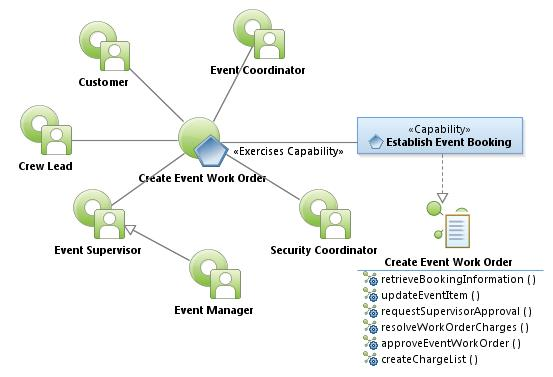
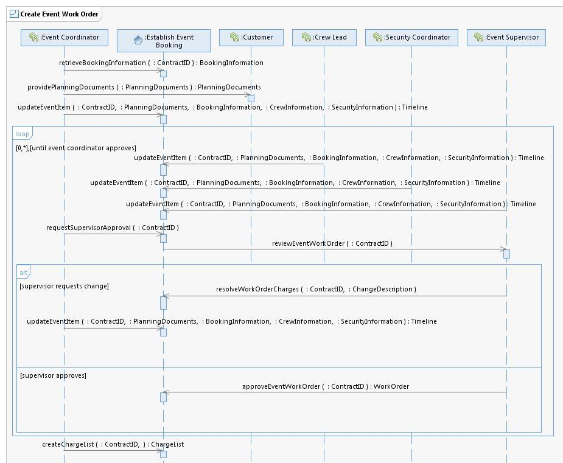

|
Create Event Work Order Use Case Specification
Select to enlarge...

Create Event Work Order Use Case Model
|
Scope: The Event Coordinator uses the system to retrieve
event Booking Information to include the ability to provide a Customer
Planning Documents. The Event Coordinator, Crew Lead, Security
Coordinator, and Event Supervisor use the system to update Event Items
such as Planning Documents, Booking Information, Crew Information,
Security Information and Timelines. Once the Event Coordinator uses the
system to indicate Event Items are ready for Event Supervisor approval.
The Event Supervisor uses the system to request changes or approve Work
Order items for a specific Contract ID. Finally, the Event Coordinator
uses the system to construct a Charge List used in Create Event
Invoice. The Pre-Plan and indicates charges assigned to the specific
event and at what cost and is the basis for the Charge List.
Select to enlarge...

Create Event Work Order Use Case Model
|
Table of Interface Descriptions
| Type/Interface | Description |
|---|
FS028
Establish Event Booking/
retrieveBookingInformation |
Event Coordinator uses the system to open the client account and
examines the Booking Information to determine the needs for the day,
analyze everything about account that Sales has provided. The Event
Coordinator takes planning information from the Client and inputs the
information into the system using convention center standards and
conventions. |
Customer/
providePlanningDocuments |
The Event coordinator reaches out to the client via phone, meeting,
site tours, and emails and gathers client event information. As part of
this effort, the Event Coordinator provides the customer with a
Planning Document, which they fill out and return to the Event
Coordinator. |
FS029
Establish Event Booking/
updateEventItem |
The Event Coordinator, Crew Lead, Security Coordinator and Event
Supervisor use the system to make changes to the Event Work Order(s)
associated with a Contract ID. Updates include booking information,
Planning Documents, security information, crew information, or any of
the free form text items added manually to the Event Work Order. The
Event Coordinator, Crew Lead, Security Coordinator and Event Supervisor
use the system to create Timelines by adding a new Event Line. This
could be one of many items to include event name, time and location
(unlock doors at 6 AM, general session 10 AM, etc.) prefunction space,
dock space, security details, timing for setup and teardown by both
internal employees and vendor, move-in/move-out days/times,
registration, book signings, breakfast/lunch/dinner food functions,
plated versus buffet meals, breakouts and meetings, bag stuffing, trade
show open, client staff show offices, computer labs, poster sessions,
food and beverage, room changeovers, room refresh. Each are outlined as
part of the Timeline. The timeline may include meeting room schedule
details (location, start date/time, end Date/time, meeting title,
speaker name, private or public), added by the Event Coordinator or the
event Representative via a Web portal. The results of this timeline may
be used to populate digital signs. |
FS030
Establish Event Booking/
requestSupervisorApproval |
Using the system, the Event Coordinator indicates the Event Work
Order is ready for the Event Supervisor to approve the invoice items.
The system notifies the Supervisor (email, text or creates an activity
for the supervisor) that input is required. |
Event Supervisor/
reviewEventWorkOrder |
The Event Supervisor uses the system to review the charges against
the contract for accuracy, charges against itemized invoices from the
other units (crew, security, parking, catering), ensures applicable
discounts are applied, and verifies account and billing information. If
the Supervisor signs off on the Work Order, the Event is ready to be
invoiced. If the supervisor has issues with the charges, they contact
the Event Coordinator and request review of the portions in question. |
FS031
Establish Event Booking/
resolveWorkOrderCharges |
If the supervisor has issues with the charges listed on the Event
work Order, they contact the Event Coordinator and request they review
the portions in question. The system sends a notification to the Event
Coordinator (email, text, activity scheduled) indicating the work order
is not yet ready for invoicing. |
FS032
Establish Event Booking/
approveEventWorkOrder |
The Event Supervisor signs off on the event Work Order, indicating
the Contract ID is ready to be invoiced. The system sends notification
to the Accounting Department notifying of the completion of the Event
Work Order creation. |
FS033
Establish Event Booking/
createChargeList |
The Event Coordinator uses the system to construct a Charge List
used in Create Event Invoice. The Charge List is based on the Pre-Plan
and indicates the charges assigned to the specific event and at what
cost. |
|
{kind=link}
{kind=link}